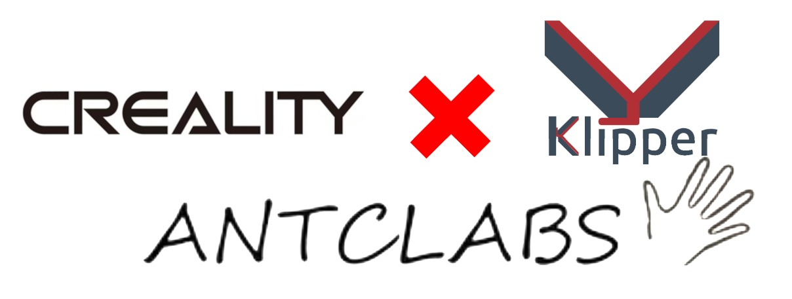
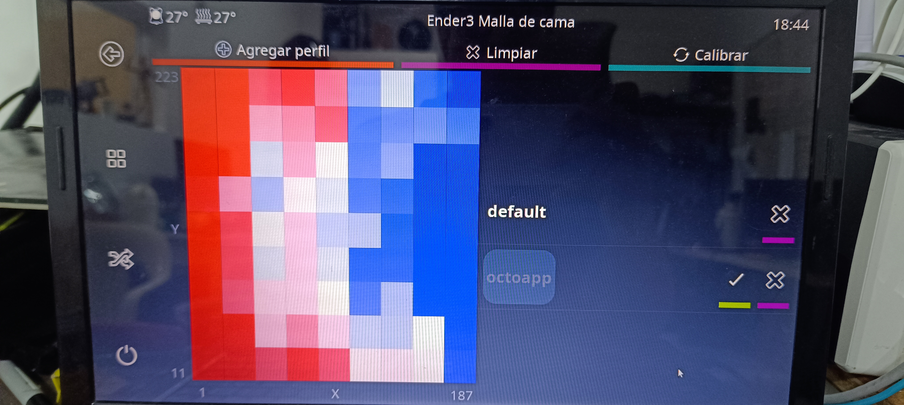
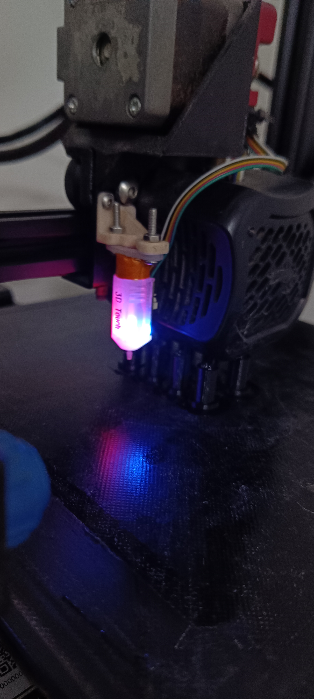
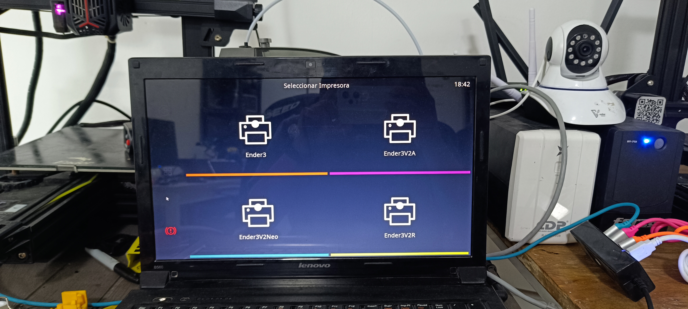

Descripción del Proyecto
La empresa Oniris-ID contaba con impresoras 3D Creality Ender distribuidas en diferentes ubicaciones, lo que dificultaba la gestión y el monitoreo eficiente de la granja de impresión. El objetivo principal del proyecto fue automatizar y centralizar el control de estas impresoras utilizando tecnologías IoT en base al sistema dedicado klipper que corre sobre un entorno ligero de Linux e interfaz de servidor web Mainsail además de la integración de sensores de nivelado de cama de impresión y programación de mallado de cama adaptativo.
Objetivos
- Integración de sensores de nivelado de cama de impresión.
- Instalación Klipper, Moonraker y Mainsail en impresoras y entorno Linux.
- Configuración de printer.cfg por impresora y perfiles de impresión automatizados en OrcaSlicer.
- Incorporación de control a distancia fuera de red local por VPN Tailscale.
Resultados
- Automatización completa de la granja de impresión 3D.
- Monitoreo y control remoto eficiente de las impresoras.
- Mejora en la calidad de impresión y reducción de errores.
- Supresión del uso de memorias físicas para carga de archivos.
Galería



